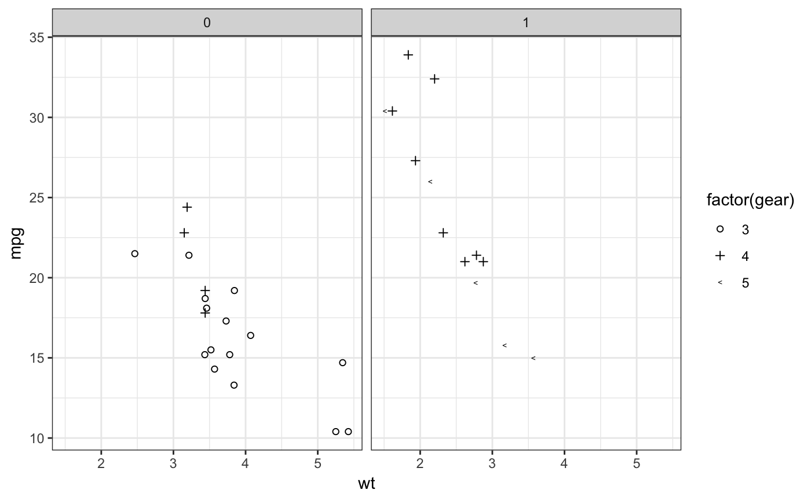
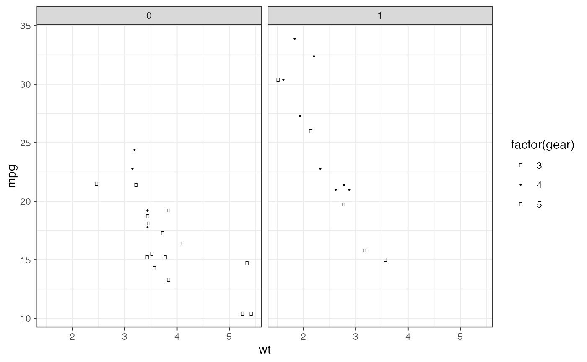

R/shapes.R
cleveland_shape_pal.RdShape palettes for overlapping and non-overlapping points.
cleveland_shape_pal(overlap = TRUE)
| overlap |
|
|---|
In the Elements of Graphing Data, W.S. Cleveland suggests two shape palettes for scatter plots: one for overlapping data and another for non-overlapping data. The symbols for overlapping data relies on pattern discrimination, while the symbols for non-overlapping data vary the amount of fill. This palette attempts to create these palettes. However, I found that these were hard to replicate. Using the R shapes and unicode fonts: the symbols can vary in size, they are dependent of the fonts used, and there does not exist a unicode symbol for a circle with a vertical line. If someone can improve this palette, please let me know.
Following Tremmel (1995), I replace the circle with a vertical line with an encircled plus sign.
The palette cleveland_shape_pal supports up to five values.
Cleveland WS. The Elements of Graphing Data. Revised Edition. Hobart Press, Summit, NJ, 1994, pp. 154-164, 234-239.
Tremmel, Lothar, (1995) "The Visual Separability of Plotting Symbols in Scatterplots", Journal of Computational and Graphical Statistics, http://www.jstor.org/stable/1390760
Other shapes: circlefill_shape_pal,
scale_shape_circlefill,
scale_shape_cleveland,
scale_shape_tremmel,
tremmel_shape_pal
### (discrete). library("ggplot2") p <- ggplot(mtcars) + geom_point(aes(x = wt, y = mpg, shape = factor(gear))) + facet_wrap(~am) + theme_bw() # overlapping symbol palette p + scale_shape_cleveland()#> Warning: conversion failure on '○' in 'mbcsToSbcs': dot substituted for <e2>#> Warning: conversion failure on '○' in 'mbcsToSbcs': dot substituted for <97>#> Warning: conversion failure on '○' in 'mbcsToSbcs': dot substituted for <8b>#> Warning: font metrics unknown for Unicode character U+25cb#> Warning: conversion failure on '○' in 'mbcsToSbcs': dot substituted for <e2>#> Warning: conversion failure on '○' in 'mbcsToSbcs': dot substituted for <97>#> Warning: conversion failure on '○' in 'mbcsToSbcs': dot substituted for <8b>#> Warning: font metrics unknown for Unicode character U+25cb#> Warning: conversion failure on '○' in 'mbcsToSbcs': dot substituted for <e2>#> Warning: conversion failure on '○' in 'mbcsToSbcs': dot substituted for <97>#> Warning: conversion failure on '○' in 'mbcsToSbcs': dot substituted for <8b>#> Warning: font metrics unknown for Unicode character U+25cb#> Warning: conversion failure on '○' in 'mbcsToSbcs': dot substituted for <e2>#> Warning: conversion failure on '○' in 'mbcsToSbcs': dot substituted for <97>#> Warning: conversion failure on '○' in 'mbcsToSbcs': dot substituted for <8b>#> Warning: font metrics unknown for Unicode character U+25cb#> Warning: conversion failure on '●' in 'mbcsToSbcs': dot substituted for <e2>#> Warning: conversion failure on '●' in 'mbcsToSbcs': dot substituted for <97>#> Warning: conversion failure on '●' in 'mbcsToSbcs': dot substituted for <8f>#> Warning: font metrics unknown for Unicode character U+25cf#> Warning: conversion failure on '●' in 'mbcsToSbcs': dot substituted for <e2>#> Warning: conversion failure on '●' in 'mbcsToSbcs': dot substituted for <97>#> Warning: conversion failure on '●' in 'mbcsToSbcs': dot substituted for <8f>#> Warning: font metrics unknown for Unicode character U+25cf#> Warning: conversion failure on '●' in 'mbcsToSbcs': dot substituted for <e2>#> Warning: conversion failure on '●' in 'mbcsToSbcs': dot substituted for <97>#> Warning: conversion failure on '●' in 'mbcsToSbcs': dot substituted for <8f>#> Warning: font metrics unknown for Unicode character U+25cf#> Warning: conversion failure on '●' in 'mbcsToSbcs': dot substituted for <e2>#> Warning: conversion failure on '●' in 'mbcsToSbcs': dot substituted for <97>#> Warning: conversion failure on '●' in 'mbcsToSbcs': dot substituted for <8f>#> Warning: font metrics unknown for Unicode character U+25cf#> Warning: conversion failure on '○' in 'mbcsToSbcs': dot substituted for <e2>#> Warning: conversion failure on '○' in 'mbcsToSbcs': dot substituted for <97>#> Warning: conversion failure on '○' in 'mbcsToSbcs': dot substituted for <8b>#> Warning: font metrics unknown for Unicode character U+25cb#> Warning: conversion failure on '○' in 'mbcsToSbcs': dot substituted for <e2>#> Warning: conversion failure on '○' in 'mbcsToSbcs': dot substituted for <97>#> Warning: conversion failure on '○' in 'mbcsToSbcs': dot substituted for <8b>#> Warning: font metrics unknown for Unicode character U+25cb#> Warning: conversion failure on '○' in 'mbcsToSbcs': dot substituted for <e2>#> Warning: conversion failure on '○' in 'mbcsToSbcs': dot substituted for <97>#> Warning: conversion failure on '○' in 'mbcsToSbcs': dot substituted for <8b>#> Warning: font metrics unknown for Unicode character U+25cb#> Warning: conversion failure on '○' in 'mbcsToSbcs': dot substituted for <e2>#> Warning: conversion failure on '○' in 'mbcsToSbcs': dot substituted for <97>#> Warning: conversion failure on '○' in 'mbcsToSbcs': dot substituted for <8b>#> Warning: font metrics unknown for Unicode character U+25cb#> Warning: conversion failure on '○' in 'mbcsToSbcs': dot substituted for <e2>#> Warning: conversion failure on '○' in 'mbcsToSbcs': dot substituted for <97>#> Warning: conversion failure on '○' in 'mbcsToSbcs': dot substituted for <8b>#> Warning: font metrics unknown for Unicode character U+25cb#> Warning: conversion failure on '○' in 'mbcsToSbcs': dot substituted for <e2>#> Warning: conversion failure on '○' in 'mbcsToSbcs': dot substituted for <97>#> Warning: conversion failure on '○' in 'mbcsToSbcs': dot substituted for <8b>#> Warning: font metrics unknown for Unicode character U+25cb#> Warning: conversion failure on '○' in 'mbcsToSbcs': dot substituted for <e2>#> Warning: conversion failure on '○' in 'mbcsToSbcs': dot substituted for <97>#> Warning: conversion failure on '○' in 'mbcsToSbcs': dot substituted for <8b>#> Warning: font metrics unknown for Unicode character U+25cb#> Warning: conversion failure on '○' in 'mbcsToSbcs': dot substituted for <e2>#> Warning: conversion failure on '○' in 'mbcsToSbcs': dot substituted for <97>#> Warning: conversion failure on '○' in 'mbcsToSbcs': dot substituted for <8b>#> Warning: font metrics unknown for Unicode character U+25cb#> Warning: conversion failure on '○' in 'mbcsToSbcs': dot substituted for <e2>#> Warning: conversion failure on '○' in 'mbcsToSbcs': dot substituted for <97>#> Warning: conversion failure on '○' in 'mbcsToSbcs': dot substituted for <8b>#> Warning: font metrics unknown for Unicode character U+25cb#> Warning: conversion failure on '○' in 'mbcsToSbcs': dot substituted for <e2>#> Warning: conversion failure on '○' in 'mbcsToSbcs': dot substituted for <97>#> Warning: conversion failure on '○' in 'mbcsToSbcs': dot substituted for <8b>#> Warning: font metrics unknown for Unicode character U+25cb#> Warning: conversion failure on '○' in 'mbcsToSbcs': dot substituted for <e2>#> Warning: conversion failure on '○' in 'mbcsToSbcs': dot substituted for <97>#> Warning: conversion failure on '○' in 'mbcsToSbcs': dot substituted for <8b>#> Warning: font metrics unknown for Unicode character U+25cb#> Warning: conversion failure on '●' in 'mbcsToSbcs': dot substituted for <e2>#> Warning: conversion failure on '●' in 'mbcsToSbcs': dot substituted for <97>#> Warning: conversion failure on '●' in 'mbcsToSbcs': dot substituted for <8f>#> Warning: font metrics unknown for Unicode character U+25cf#> Warning: conversion failure on '●' in 'mbcsToSbcs': dot substituted for <e2>#> Warning: conversion failure on '●' in 'mbcsToSbcs': dot substituted for <97>#> Warning: conversion failure on '●' in 'mbcsToSbcs': dot substituted for <8f>#> Warning: font metrics unknown for Unicode character U+25cf#> Warning: conversion failure on '●' in 'mbcsToSbcs': dot substituted for <e2>#> Warning: conversion failure on '●' in 'mbcsToSbcs': dot substituted for <97>#> Warning: conversion failure on '●' in 'mbcsToSbcs': dot substituted for <8f>#> Warning: font metrics unknown for Unicode character U+25cf#> Warning: conversion failure on '●' in 'mbcsToSbcs': dot substituted for <e2>#> Warning: conversion failure on '●' in 'mbcsToSbcs': dot substituted for <97>#> Warning: conversion failure on '●' in 'mbcsToSbcs': dot substituted for <8f>#> Warning: font metrics unknown for Unicode character U+25cf#> Warning: conversion failure on '●' in 'mbcsToSbcs': dot substituted for <e2>#> Warning: conversion failure on '●' in 'mbcsToSbcs': dot substituted for <97>#> Warning: conversion failure on '●' in 'mbcsToSbcs': dot substituted for <8f>#> Warning: font metrics unknown for Unicode character U+25cf#> Warning: conversion failure on '●' in 'mbcsToSbcs': dot substituted for <e2>#> Warning: conversion failure on '●' in 'mbcsToSbcs': dot substituted for <97>#> Warning: conversion failure on '●' in 'mbcsToSbcs': dot substituted for <8f>#> Warning: font metrics unknown for Unicode character U+25cf#> Warning: conversion failure on '●' in 'mbcsToSbcs': dot substituted for <e2>#> Warning: conversion failure on '●' in 'mbcsToSbcs': dot substituted for <97>#> Warning: conversion failure on '●' in 'mbcsToSbcs': dot substituted for <8f>#> Warning: font metrics unknown for Unicode character U+25cf#> Warning: conversion failure on '⊕' in 'mbcsToSbcs': dot substituted for <e2>#> Warning: conversion failure on '⊕' in 'mbcsToSbcs': dot substituted for <8a>#> Warning: conversion failure on '⊕' in 'mbcsToSbcs': dot substituted for <95>#> Warning: font metrics unknown for Unicode character U+2295#> Warning: conversion failure on '⊕' in 'mbcsToSbcs': dot substituted for <e2>#> Warning: conversion failure on '⊕' in 'mbcsToSbcs': dot substituted for <8a>#> Warning: conversion failure on '⊕' in 'mbcsToSbcs': dot substituted for <95>#> Warning: font metrics unknown for Unicode character U+2295#> Warning: conversion failure on '⊕' in 'mbcsToSbcs': dot substituted for <e2>#> Warning: conversion failure on '⊕' in 'mbcsToSbcs': dot substituted for <8a>#> Warning: conversion failure on '⊕' in 'mbcsToSbcs': dot substituted for <95>#> Warning: font metrics unknown for Unicode character U+2295#> Warning: conversion failure on '⊕' in 'mbcsToSbcs': dot substituted for <e2>#> Warning: conversion failure on '⊕' in 'mbcsToSbcs': dot substituted for <8a>#> Warning: conversion failure on '⊕' in 'mbcsToSbcs': dot substituted for <95>#> Warning: font metrics unknown for Unicode character U+2295#> Warning: conversion failure on '⊕' in 'mbcsToSbcs': dot substituted for <e2>#> Warning: conversion failure on '⊕' in 'mbcsToSbcs': dot substituted for <8a>#> Warning: conversion failure on '⊕' in 'mbcsToSbcs': dot substituted for <95>#> Warning: font metrics unknown for Unicode character U+2295#> Warning: conversion failure on '●' in 'mbcsToSbcs': dot substituted for <e2>#> Warning: conversion failure on '●' in 'mbcsToSbcs': dot substituted for <97>#> Warning: conversion failure on '●' in 'mbcsToSbcs': dot substituted for <8f>#> Warning: font metrics unknown for Unicode character U+25cf#> Warning: conversion failure on '○' in 'mbcsToSbcs': dot substituted for <e2>#> Warning: conversion failure on '○' in 'mbcsToSbcs': dot substituted for <97>#> Warning: conversion failure on '○' in 'mbcsToSbcs': dot substituted for <8b>#> Warning: font metrics unknown for Unicode character U+25cb#> Warning: conversion failure on '●' in 'mbcsToSbcs': dot substituted for <e2>#> Warning: conversion failure on '●' in 'mbcsToSbcs': dot substituted for <97>#> Warning: conversion failure on '●' in 'mbcsToSbcs': dot substituted for <8f>#> Warning: font metrics unknown for Unicode character U+25cf#> Warning: conversion failure on '⊕' in 'mbcsToSbcs': dot substituted for <e2>#> Warning: conversion failure on '⊕' in 'mbcsToSbcs': dot substituted for <8a>#> Warning: conversion failure on '⊕' in 'mbcsToSbcs': dot substituted for <95>#> Warning: font metrics unknown for Unicode character U+2295